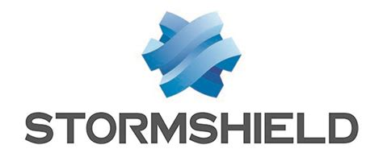
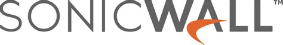

Stage Clinique de l'Anjou
Pourquoi avoir pris cette mission ?
J’ai décidé de faire mon stage la Clinique de l’Anjou dans le poste de technicien systèmes et réseaux car cela me permettrai de pouvoir travailler dans une grande infrastructure. Je serai amené à faire un grand nombre de mission très diversifiés au plus proche des employés, de leurs besoins et des besoins de la Clinique.
Contrairement à ce qu’on pourrait penser, les clients de la clinique ne sont pas mes « clients » (bien qu’il rentre en compte quand même). Mes clients sont d’avantages les employés de la clinique, que je dois aider face aux différents problèmes et les former aux différentes menaces, bonne pratique à adopter, ou encore essayer de les rendre légèrement plus autonomes face à certains problèmes informatique qu’ils pourraient rencontrer.
Qui est cette entreprise ?
La clinique de l’anjou a été créée en 2002 et est un regroupement de 3 autres cliniques (Clinique St Louis, la Clinique St Martin et la Polyclinique de l’Esperance), qui a été effectué en aout 2006.
Le concurrent direct de la Clinique de l’Anjou est le CHU d’Angers.
Suite à la cyberattaque de la Clinique en janvier 2021, les objectifs sont d’offrir un réseau et des solutions sécurisées pour que ce genre d’actions malveillantes ne puisse pas se reproduire. Et également de pouvoir répondre le mieux possible aux besoins des différents patients.
C’est pour ça qu’une partie du système a été pris en charge par des sociétés privées pour pouvoir garantir cela. Ils sont également disponibles en support pour nous aider à régler certains soucis.
Les valeurs de la clinique sont :
- une haute technicité
- offrir une bonne qualité de soins
- une organisation centrée autour du patient
- une bonne éthique et la bientraitance
Mon rôle
J’ai intégré le service informatique, mon rôle est principalement du support mais je suis amené à toucher aussi à une partie système et réseau. Par exemple en faisant de la configuration de switch, en mettant en place le matériel réseau dans de nouveaux bâtiments ou encore en participant à des projets d’automatisation sur windows server 2019 (entre autres…).
Je suis également amené à toucher à une partie de téléphonie. Que ce soit sur le coté logiciel en mettant en place des renvois d’appels, renvoie vers messagerie, changement de poste téléphonique ou directement sur les différentes baies téléphoniques.
Le critère principal de performance est l’aide apporté au personnel et le travail fourni en général dans la Clinique. Les conséquences de la non réussite de mes missions peuvent être l’impossibilité pour les personnes de la clinique à travailler correctement et/ou une perte financière.
Néanmoins si je termine correctement mes missions la clinique peut continuer de fonctionner sans soucis et que le confort des employés et des patient soit optimal.
Outils et métodologie
Les outils utilisés sont :

windows server 2019

HyperV (pour la virtualisation des systèmes)

Stormshield (pare-feu)

Sonicwall (vpn), utilisé pour permettre aux employé d’accéder à certaines applications/appareilles depuis autre part que la clinique.
En ce qui concerne le support, les demandes sont généralement faites via le téléphone de service ou sur la boite mail interne.
J’ai également pris l’initiative de faire un tableur répertoriant les différents problèmes rencontrés et qui venait nous voir pour avoir une vision globale des problèmes de la clinique et pouvoir agir de façon bien plus précise au prêt du personnel.
L'organisation dans le SI :
Il y a un planning sur les choses à faire pour la journée ou la semaine qui est soit donné par le responsable, soit rédigé par les différents techniciens pour pouvoir avoir personnellement une liste de tâches à effectuer.
Il y a aussi une phase de rangement environ une fois par semaine dans les stocks et les bureaux du SI pour éviter de s’encombrer (carton, cables, postes, matériels…) et aussi pour avoir un environnement plus propice au travail.
Nous procédons également de temps en temps pendant le rangement du stock à un petit inventaire pour voir ce qu'il nous manque ou non
Il y a aussi des procédures écrites pour l’utilisation de logiciel/solutions ou pour certaines actions de supports qui sont disponible sur un répertoire partagé pour pouvoir y avoir accès par tous les membres du SI tous le temps.
Pour la partie support je fais généralement certaines missions simples comme du changement matériel ou de la configuration de switch. Mais généralement j’accompagne lors des supports pour apprendre et observer. Je participe également à la mise en place de l’infrastructure réseau dans de nouveaux bâtiments liés à la clinique.
Les missions :
celles faites seules me permettent de gagner en autonomie que ça soit dans le repérage des lieux ou dans la rigueur de travail.
celles faites acompagnées me permettent de prendre connaissance d’autre partie du bâtiment et également d’accéder à des missions d’un niveau plus élevé et de pouvoir prendre plus ample connaissance de comment est gérer toutes la clinique.
Les points positifs sur les missions que je fais sont que je touche un peu à tout et je vais un peu partout dans la Clinique. Néanmoins les difficultés sont que je n’ai pas encore une assez bonne connaissance du bâtiment et du fonctionnement de l’informatique du lieu pour me permettre de faire beaucoup de mission en autonomie.
Compétences acquises
En ce qui concerne les soft skills, j’ai eu l’occasion d’en expérimenter de nouveau et de valider l’importance de certains vu lors de ma formation. Il y a par exemple le fait d’avoir expérimenté durant mes missions de support :
l'autonomie
la rigueur
l'écoute des autres
Et également sur le fait de pouvoir se débrouiller tout seul pour régler le problème au plus vite sans avoir à solliciter d’autres personnes du service informatique. J’ai également pu beaucoup travailler le contact avec les autres dans la mesure où, dans le cadre du support j’ai été amené à devoir discuter avec une grande partie de personnel de la clinique. Cela m’a aussi permis de développer ma patience et mon sang-froid dans le cadre de ces missions de support.
Pour la partie des hard skills, on peut évoquer la partie windows server et réseau vu en cours et qui me servent beaucoup lors de ce stage.
La raison est que quasiment tous les systèmes informatiques de la Clinique sont sous windows server 2019 et que pour la configuration de matériels réseaux, bien que ça ce soit pas du matériel cisco mais du hp cela reste assez similaire à ce que j’avais pu faire lors de ma première année.
J’ai également pu expérimenté ce que j’ai appris lors du module IS Security en faisant, dans le cadre de certaines missions de support, de la sensibilisation auprès du personnel au sujet de bonnes pratique et d’hygiène numérique à adopté (surtout dans le cadre actuel, à savoir que la clinique a été victime d’un ransomware en début d’année)
Au vu des différents soft skills et hard skills que j’ai l’occasion d’utiliser au quotidien, ce stage à la Clinique de l’Anjou correspond parfaitement à mes attentes. Il va me permettre de me faire grandement monter en compétence sur tous les niveaux.
Mon retour d'expérience
Au cours de ce stage de huit semaines, j’ai globalement réussi à atteindre la plupart de mes objectifs (tâches à faire). J’estime avoir réussi car mes collègues ou le personnel étaient plutôt satisfait du travail effectué. Dans le cas de non réussite ou de réussite partiel, j’aurai pu essayer de creuser un peu plus le sujet pour trouver, au moins de manière temporaire, une solution qui permettrait de palier au problèmes.
Cette expérience m’a permis de développer ma posture de jeune professionnel car lors de ces 8 semaines j’ai été amené à développer un grand nombre de compétences (aussi bien soft skill que hard skill), de prendre des décisions avec le personnel ou mes collègues et surtout car cela m’a permis de mettre un pied dans le monde professionnel et son fonctionnement.
Pour les années à venir, mes objectifs seront de mieux m’organiser pour répondre au plus vite aux demandes du personnel de la clinique. Un autre objectifs serait de faire de mon mieux pour trouver des solutions à plusieurs problèmes récurrents a sein de la clinique.